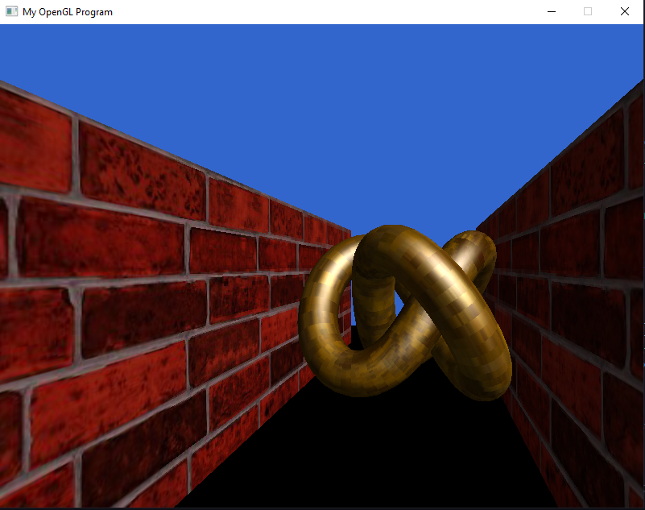

showcase of project 4: real-time 3D game programming
required features
1. continuous movement throughout the enviroment, with user input
up and down keys move the camera forwards and backwards, left and right keys rotate camera left and right
2. walls & doors have unique renderings
walls have brick texture, doors have wood texture
3. keys are rendered as a teapot, and when a player picks them up, it is rendered in front of the camera

4. collision detection, the player cannot walk through walls or locked doors

other features showcased:
- floor rendered as black tiles
- ambient and diffuse lighting in scene from shaders
new maps
difficulties i encountered
i turned this project 3 days late because of a mismatch between how i was rendering my cube model and how i did the math inside my collistion detection. i lost 3+ days of debugging down to one fix in my code: shifting all the cubes by 0.5f... it was so frustrating diminishing my grade 20% because of one small bug. but shoutout stephen for sitting down and fixing it with me. i think OpenGL and SDL rendering were very straightforward so i didn't have a problem with that. things like doors and keys were actually fun to code the logic for.
link to download project files